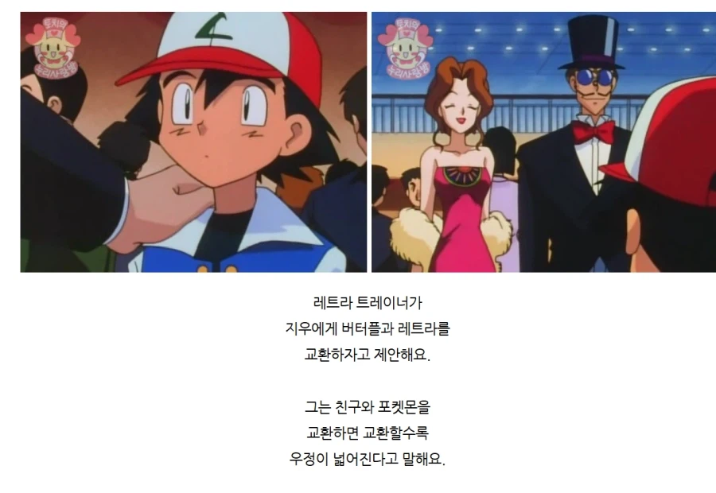
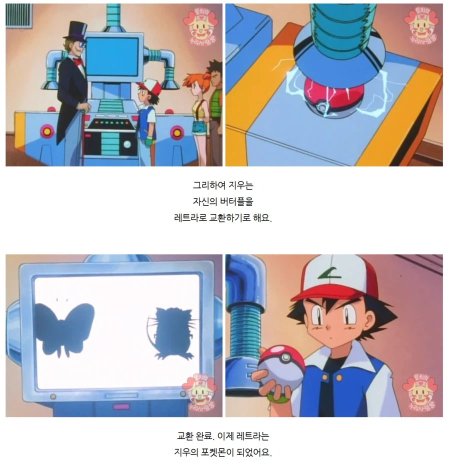
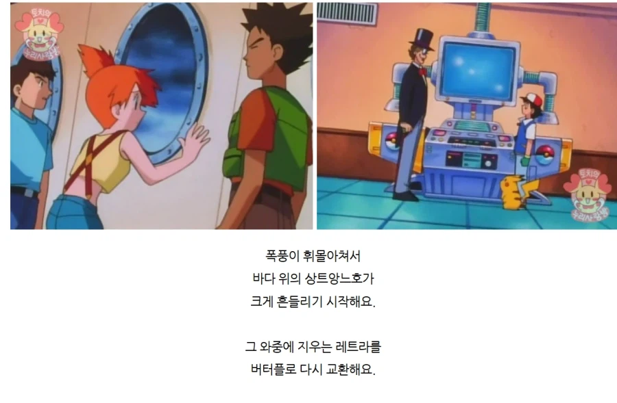
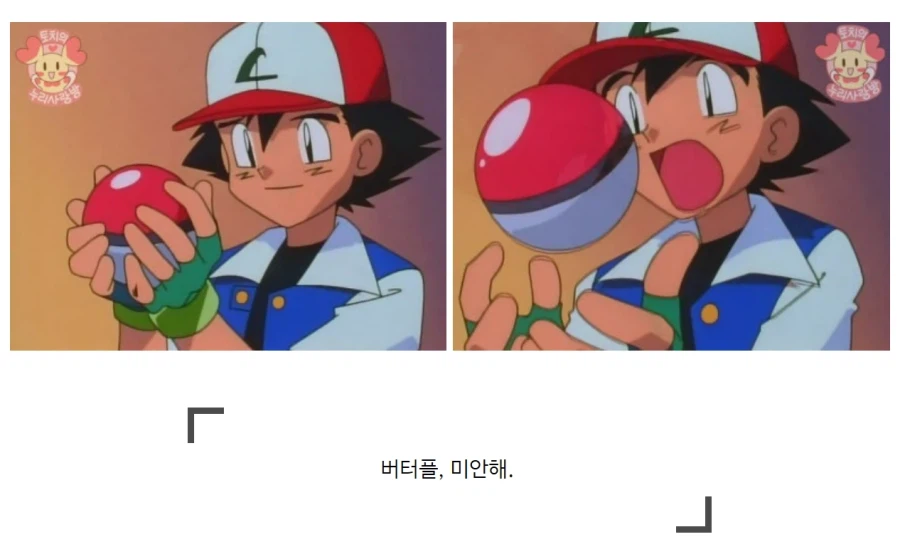
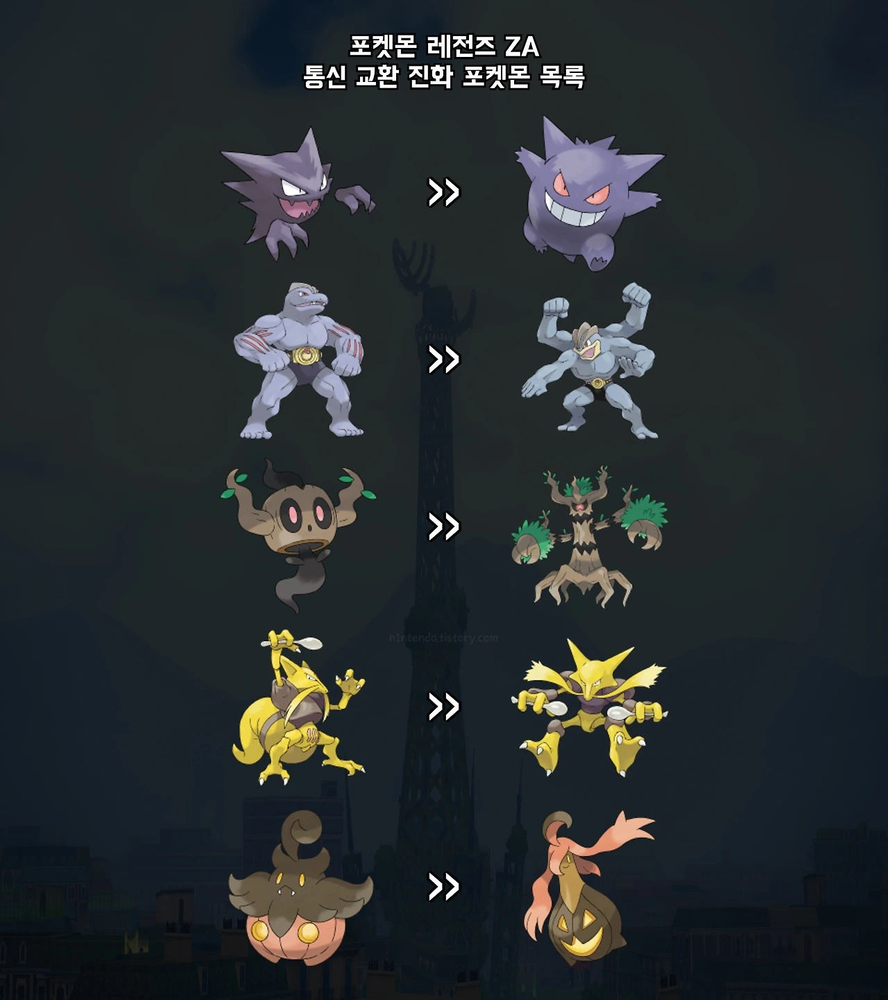
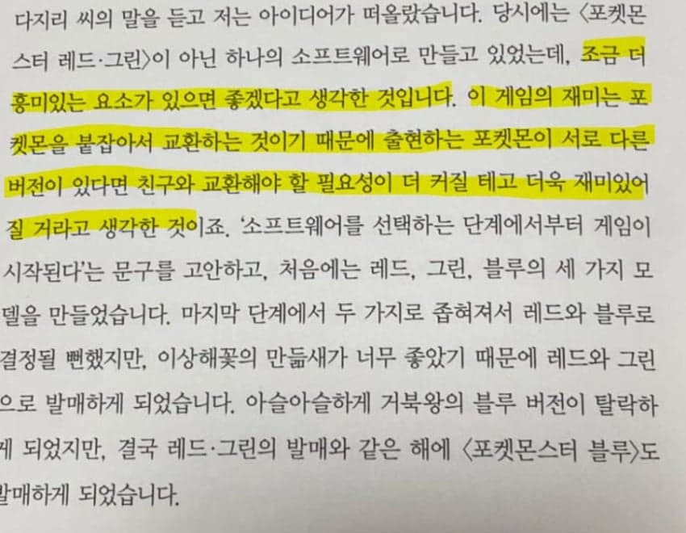
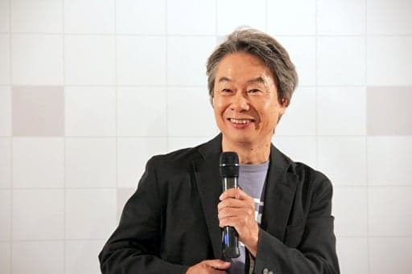
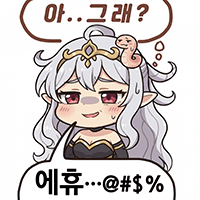
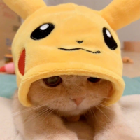
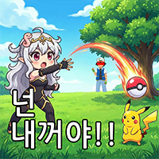

포켓몬 애니 시청자(주로 어린이들)은 교환이 자기 정든 포켓몬 보내는 나쁜 짓이라고 무의식적으로 느끼게 해주고 교환을 꺼리게 해주는 장면인데



정작 게임은 아예 기획부터 미야모토 시게루가 교환을 장려했엇고, 교환으로 밖에 진화할 수 있게 하는 포켓몬을 넣었음.
사실 애니랑 게임이 핀트가 안 맞았은건 무인편부터 조짐이 있었음.
- dc official App
댓글
수집 당시 댓글 80개
ㅇㅇ · 11.16 11:32:57
· 2456778 · 11.18 08:41:53
ㅇㅇ · 11.16 11:37:47
· 란코 · 11.16 11:52:54
· ㅇㅇ3 · 11.16 16:25:21
· ㅇㅇ5 · 11.17 08:52:34
· ㅇㅇ · 11.18 09:28:22
단코 · 11.16 11:40:46
· 란코 · 11.16 11:52:03
· ㅇㅇ · 11.16 22:24:40
· 말들갑왕 · 11.18 08:58:29
· ㅇㅇ · 11.18 09:10:41
ㅇㅇ1 · 11.16 11:48:45
· ㅇㅇ · 11.18 09:00:11
무라비 · 11.16 12:26:08
· ㅇㅇ2 · 11.16 13:36:21
· 무라비 · 11.16 13:36:57
· 무라비 · 11.16 13:39:13
· ㅇㅇ · 11.16 22:52:13
· 무라비 · 11.16 22:56:10
· ㅇㅇ · 11.18 10:15:45
루카오스 · 11.16 13:25:56
ㅇㅇ · 11.16 13:36:01
· ㅇㅇ · 11.16 14:08:34
ㅇㅇ · 11.16 14:02:16
ㅇㅇ · 11.16 14:19:58
· ㅇㅇ · 11.18 09:20:14
ㅇㅇ4 · 11.16 22:00:18
· 인시스트 · 11.17 08:55:10
· ㅇㅇ · 11.18 16:36:01
ㅇㅇ · 11.18 08:32:25
· 파도. · 11.18 08:34:22
· 2456778 · 11.18 08:41:38

파도. · 11.18 08:34:47

· ㅇㅇ · 11.18 08:37:16
· 2456778 · 11.18 08:41:12
· 애기연지벌레 · 11.18 08:56:18
· 파도. · 11.18 08:57:16
· ㅇㅇ · 11.18 11:53:48
ㅇㅇ · 11.18 08:35:21
ㅇㅇ · 11.18 08:35:58
ㅇㅇ · 11.18 08:37:29
ㅇㅇ · 11.18 08:40:34
· ㅇㅇ · 11.18 08:44:48
· ㅇㅇ · 11.18 11:32:25
· ㅇㅇ · 11.18 15:30:49
2456778 · 11.18 08:41:22

· 파도. · 11.18 08:44:25
· ㅇㅇ · 11.18 11:53:56
ㅇㅇ · 11.18 08:45:04
ㅇㅇ · 11.18 08:53:10
카야조아 · 11.18 09:08:31
PP사비 · 11.18 09:15:50
PP사비 · 11.18 09:17:56
· ㅇㅇ · 11.18 09:22:07
· ㅇㅇ · 11.18 16:38:15
ㅇㅇ · 11.18 09:43:04
ㅇㅇ · 11.18 09:52:25
ㅇㅇ · 11.18 09:58:35
ㅇㅇ · 11.18 10:16:39
린잘알 · 11.18 10:24:18
냉동 · 11.18 10:42:49
ㅇㅇ · 11.18 10:55:21
사메리 · 11.18 10:56:30
ㅇㅇ · 11.18 11:18:10
ㅇㅇ · 11.18 11:27:18
ㅇㅇ · 11.18 11:38:16
ㅇㅇ · 11.18 12:04:35
· ㅇㅇ · 11.18 14:08:24
ds · 11.18 12:07:40
ㅇㅇ · 11.18 12:43:01
ㅇㅇ · 11.18 13:36:06
ㅇㅇ · 11.18 13:37:04
악의꽃 · 11.18 13:39:48
ㅇㅇ · 11.18 14:40:37
ㅇㅇ · 11.18 15:27:23
ㅇㅇ · 11.18 15:50:54
· ㅇㅇ · 11.18 20:01:47
ㅇㅇ · 11.18 16:40:20
ㅇㅅㅇ · 11.18 17:17:35